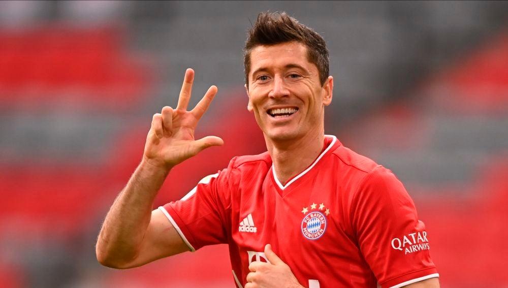
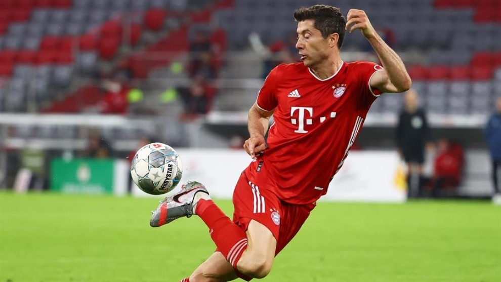

Robert Lewandowski (pronunciado /ˈrɔbɛrt lɛvanˈdɔfskʲi/ ( escuchar); Varsovia, Mazovia, Polonia, 21 de agosto de 1988) es un futbolista polaco que juega como delantero en el Bayern de Múnich de la Bundesliga de Alemania desde la temporada 2014-15. Es también internacional absoluto con la selección de Polonia desde 2008, de la cual es su capitán y máximo goleador histórico. Considerado como uno de los mejores delanteros del mundo, es el tercer máximo goleador de la historia del campeonato alemán (segundo de la Bundesliga). Ostenta algunas de las mejores marcas al ser el autor del triplete, cuadruplete y quintuplete más rápidos en un mismo encuentro. Se unen al registro de ser el suplente que más goles marcó tras ingresar a un partido como sus cuatro récord Guinness reconocidos. Su carrera profesional comenzó en el año 2006 en las filas del Znicz Pruszków, donde fue máximo goleador en dos ocasiones. En 2008 se trasladó al Lech Poznań de la Primera División de Polonia, ganando la Ekstraklasa 2009-10 siendo el máximo goleador. En 2010, fue transferido al Borussia Dortmund alemán dirigido por Jürgen Klopp por 4,5 millones de euros, donde ganó varios títulos incluyendo dos Bundesliga consecutivas. Antes del inicio de la temporada 2014-15 fichó por el que había sido un rival directo del Dortmund en las últimas temporadas, el máximo campeón alemán, el Bayern de Múnich. Fue el principal referente de su club, junto a Manuel Neuer, Thomas Muller y Joshua Kimmich, quienes guiaron a su equipo a ganar el pleno de títulos posibles del año 2020: liga alemana, copa de la liga, súper copa alemana, Liga de Campeones y Supercopa de Europa; siendo goleador de la Bundesliga, de la Pokal y de la Liga de Campeones. En La Liga de Campeones marcó 15 goles en nueve partidos consecutivos, solo fallando en poder marcar en la final. Lewandowski fue el máximo goleador del año 2019, 2020 y 2021 (año calendario) y también ganador del Premio The Best FIFA en el año 2020 y 2021; además es el tercer máximo goleador de la Liga de Campeones de la UEFA. Es licenciado en Educación Física y Deporte por la Wyższa Szkoła de Varsovia.
Lewandowski fue presentado oficialmente como jugador del Bayern de Múnich el 9 de julio de 2014. Hizo su debut oficial en la derrota (2-0) ante el Borussia Dortmund, en la Supercopa, el 13 de agosto de 2014. Su debut con el Bayern Múnich en la 1. Bundesliga se produciría en la victoria por 2-1 frente al Vfl Wolfsburg. Anotó su primer gol en el empate 1-1 ante el Schalke 04 en su segundo partido de liga el 30 de agosto. En su primera campaña en el gigante bávaro, conquistó su tercer título de Bundesliga aunque no pudo reeditar su trofeo de máximo goleador que fue obtenido por Meier. El 22 de septiembre de 2015, Lewandowski fue autor de los cinco goles con los que el Bayern derrotó al VfL Wolfsburgo en un partido de Bundesliga. Tras el descanso, momento en el cual su equipo caía por 1 a 0, el futbolista ingresó al campo de juego. En el minuto 51 anotó el primero de los cinco tantos, en un corto lapso de nueve minutos, lo cual fue todo un récord . Dichos goles le valieron cuatro récords Guinness: el triplete, cuadruplete y quintuplete más rápidos en la historia de la Bundesliga, así como el suplente que más goles marcó tras ingresar al campo en esa misma competición. En los siguientes dos partidos convirtió un doblete (3-0 ante Mainz como visitante) y un hat-trick (5-0 al Dinamo Zagreb), convirtiendo así diez goles en una semana. Posteriormente, fue vital en la remontada del Bayern de Múnich a la Juventus en la que su gol sirvió para que el Bayern remontara un 2-0 en contra y lo convirtieran en un 4-2 tras la prórroga. En Bundesliga anotó 30 goles, algo que no se lograba desde que Dieter Müller en 1977. Comenzó la temporada 2016-17 logrando dos hat-trickː uno en Copa al Carl Zeiss Jena y otro ante el Werder Bremen en Bundesliga. Alcanzó la treintena de goles por segunda vez consecutiva en Liga, aunque Aubameyang fue el máximo goleador, y mejoró su registro goleador en una temporada al anotar 43 tantos, uno más que en la anterior. En su cuarta temporada en el club bávaro fue máximo goleador de la Bundesliga con 29 tantos, además de registrar más de cuarenta goles entre todas las competiciones por tercera temporada consecutiva. El 12 de agosto de 2018 marcó un nuevo hat-trick en el triunfo ante el Eintracht Frankfurt (0-5) en la final de la Supercopa de Alemania.El 8 de marzo, tras un doblete al Wolfsburgo, se convirtió en el máximo goleador extranjero de toda la historia de la Bundesliga superando a Claudio Pizarro con 197 goles. El 26 de octubre de 2019, el Bayern de Múnich, vence por 2 - 1 al F. C. Unión Berlín, por el partido correspondiente a la jornada 9 de la edición de la Bundesliga 2019/20, con gol de Lewandowski incluido, por lo que se convierte en el primer jugador de la historia de la Bundesliga, en anotar de forma consecutiva en todas las primeras 9 jornadas de Liga. El 23 de agosto de 2020, durante la pandemia por COVID-19, el Bayern Múnich se consagra campeón de la Champions tras vencer al París Saint-Germain, consiguiendo así el primer título internacional para el jugador polaco. Terminando una temporada excepcional, aunque perdiendo el Balón de Oro. En febrero de 2021, se llevó a cabo la Copa Mundial de Clubes de la FIFA de la temporada pasada que fue aplazada por la pandemia de COVID-19, y el 11 de febrero del mismo mes, el Bayern Múnich se coronó campeón del Mundial de Clubes tras vencer al Tigres UANL de México, consiguiendo así el "Sextete". El 22 de mayo superó el récord de 40 goles anotados en una temporada por Gerd Müller en el minuto 90 ante el F. C. Augsburgo, consiguiendo además su primera Bota de Oro.